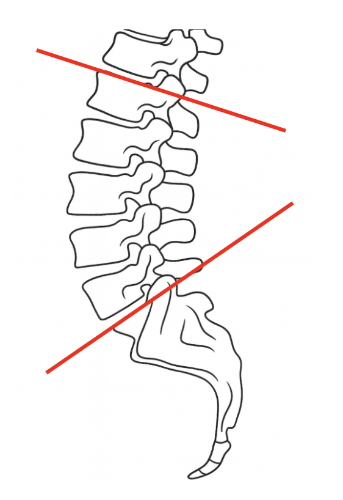
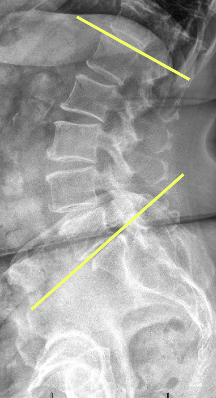

1) Description of Measurement
Lumbar lordosis is the natural inward curve of the lower spine. It’s important for maintaining upright posture and overall spinal balance.
2) Instructions to Measure
On a lateral lumbar X-ray, lumbar lordosis is typically measured by drawing lines along the superior endplates of L1 and S1, then erecting perpendiculars to each; the angle formed at their intersection is recorded as the lumbar lordosis angle.
3) Normal vs. Pathologic Ranges (a bit controversial)
Normal range: ~40°–60°
< 40°: Hypolordosis (can indicate flat back or postural imbalance)
> 60°: Hyperlordosis (seen in conditions like spondylolisthesis or postural compensations)
4) Important References
Warner WC, Sawyer JR. Scoliosis and kyphosis. In: Azar FM, Beaty JH, eds. Campbell's Operative Orthopaedics. 14th ed. Philadelphia, PA: Elsevier; 2021:chap 44.
Ng JK, Kippers V, Richardson CA, Parnianpour M. Range of motion and lordosis of the lumbar spine: reliability of measurement and normative values. Spine. 2001 Jan 1;26(1):53-60.
Chun SW, Lim CY, Kim K, Hwang J, Chung SG. The relationships between low back pain and lumbar lordosis: a systematic review and meta-analysis. The Spine Journal. 2017 Aug 1;17(8):1180-91.
5) Other info....